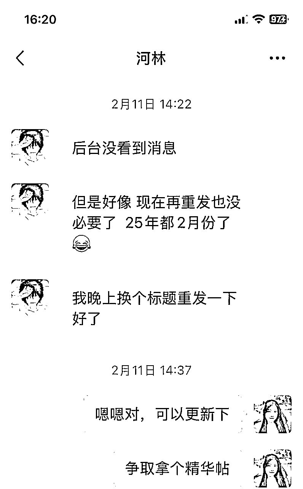

来源：https://tiiac9xs4t1.feishu.cn/docx/EM3od3pfQoAHkaxyuircG8fUnsb
大家好，我是浙大吴美律，最近和生财团队的子安（木木）聊，发现我在近期组线下局的过程中，心态发生了很大的变化，也许对其他活动委员有启发，在子安鼓励下，我想分享下这次特别的经历、心路历程以及组局的经验。
去年开始，生财鼓励大家多组织线下局，毕竟线上聊千遍，不如线下见一面，那时候我满怀热情、力争上游，还和圈友打赌，要一年组XX场局。但那时候，组局在我看来是一件为爱发电的事，虽然有热情，但组局过程中要面对很多不确定性、阻碍和困难，三分钟热度很快就下去了，惭愧地说，去年我一共就组了不到15场局，远远低于当初定下的目标。
记得有次和常常聊天，他很语重心长地对我说：
美律，你要注意保护你对组局的热情。
我当时听了很感慨：即使是对组了几十场局的常常来说，组局也可能是让他内耗的。虽然组局不管对圈友、对生财都是非常有价值的一件事，但组局官们真的要保护好自己的心力呀！
那么问题来了：
怎么才能尽量降低组局这件事对组局官的消耗，从而可持续组局呢？
我总结下来就是：
先自私再无私，先利己再利他。
我就从这两周邀请河林老师作为嘉宾组织线下学习局说起。
说来好笑，其实我今年第一场局的初心，完全是自私的，一是为了赶学习局内测的ddl，二是想找大佬请教视频号，当时正好听涛哥的视频号私享会员直播，提到视频号的投放确定性强，但我自学太慢，在生财索引站也没有搜到很新很具体的信息，就想通过线下局找找信息差，直接薅着嘉宾问我这个需求该怎么解决。
于是我在生财团队整理的杭州同学录里搜视频号关键词，找意向嘉宾，但没想到，一上来就吃了闭门羹，且看河林当时是怎么回复我的：
（本文所有聊天截图已获对方授权许可）
真的是非常真诚的拒绝啊，哭泣，但脸皮厚勇敢的美律并没有放弃，秉承嘴甜不要钱的原则，对河林老师展开了新一轮攻势
在邀约的过程中，我们可以威逼利诱，比如对嘉宾来说，分享也是一次曝光，也许就能找到潜在的合作伙伴；
当然，我们还是永远要把选择权还给对方，进一步退半步
这时河林问我具体人数和时间，我发现，咦有机会，简直太开心了~
目前为止，假设你之前完全不认识河林，你觉得他的分享经验如何呢？主业运营打工人，从来没分享过？nonono
请看下一张：
接着聊才知道，原来河林老师在其他社群已经有两个预定分享局了，甚至连PPT都是现成的，生财真是藏龙卧虎啊！挖掘优质嘉宾资源，也是本学习委员的分内之事~这么优秀，必须拿下！
但他前面怎么那么高冷啊，还发好长的小作文来拒绝我？！
可见嘉宾说的谦虚话都是不能信的（误），只要你觉得ta能分享，ta就一定能，只管嘴甜邀约就行了（求生欲：但还是要尊重对方意愿和时间安排）
河林担心来的圈友不需要他分享的内容，于是为了筛选圈友，我还在活动详情上特意加了这一段：
“特别提醒：河林老师之前在头部视频号直播公司工作，一直以来为品牌方服务，属于正规军偏团队式打法，不适合无人半无人直播圈友参考，请在报名前确认是否和你的需求匹配”
但实际上，有很多圈友是个人作战，也kuku报名了，而且都表示很有收获，所以也许是我们太紧绷了，一线的实战经验和前沿信息，谁不想知道呢？
后面就是波澜不惊的组局准备过程啦，其实当时我也有点顾虑，会不会真像河林说的，没几人对这个主题感兴趣？
但没想到，海报发出后，很快就满员了，我找鱼丸加了5个名额，还是很快满员（上周我又组了两场局，也都是这样），但预订的邈墨茶馆已经坐不下了，最后有几个圈友是坐小板凳在后排听的，生财团队的七天可爱多也来参加了，荣幸之至~
这说明什么朋友们？组局官的红利期来了，现在组局，不用拼命推销，不用找人扩散，组局供不应求啊！市场已经教育好了，很多圈友就想参加线下局，但局一共就那么几个，现在发起，立享线下局6小时满员超奢华尊贵体验，走过路过不要错过！
其实大家不组局，无非是顾虑以下几个点：
1、害怕流局
其实目前组局比去年要容易很多，因为圈友参加线下局的需求大增，组局官却比以往少了很多
而且今年，生财官方对线下组局的扶持力度也更大了，我们有活动委员群可以交流组局心得，还终于有了官方城市群可以招募圈友，另外，官方也一直在内测以更好地激励组局官们。
另外，流局是很正常的，确实有一些话题就是感兴趣的人少，也总有一些我们无法控制的因素，比如天气恶劣、活动行程冲突等等，我们能做的，就是在能力范围内，掌握一些小技巧，把组局的价值尽可能传达给圈友，吸引圈友来参加。
建议大家在周二组局审核通过后，就在朋友圈、各个群发海报，如果发现报名进度很慢，就要及时和嘉宾沟通，调整标题、组局内容，并在之后几天里多招募几次，酒香还怕巷子深，多触达用户总是有用的，我基本上每次招募都能多几位报名圈友的。
另外，在发起组局时，一定要起一个好标题：
我们观察可以发现，海报上最醒目的就是标题了，好的标题应该言简意赅，又足够吸引人，那就一定要选择好关键词，因为标题就是由关键词组成的。
建议挖掘嘉宾分享内容中的热点，比如今年很多人都在尝试视频号，那如果分享的内容确实跟视频号有关，一定要在标题中体现出来。
另外，标题应该多用大数法则，具体直观。举个例子，《如何做好XXX》就比较模糊含混，《如何实现XXX十倍增长》就生动直观。但要避免标题党和夸大不实。
标题里的核心概念要准确聚焦，比如下图的标题提到的IP、私域，就是嘉宾分享的核心概念，核心概念准确，圈友对活动的预期就不容易产生偏差，嘉宾分享能够有的放矢，有助于组局获得好的反馈。相比之下，《AI搞钱》这类标题就过于宽泛，讨论容易过于分散不够聚焦；如果圈友对标题的理解存在歧义，大家的预期就会不一致，对组局的评价也容易参差不齐。
最后，如果还是担心圈友对线下局的预期与实际不一致，影响线下局氛围，可以添加“特别提醒”板块，提醒此次组局适合谁不适合谁，组局官尽到了提醒义务，如果圈友不仔细看聚会详情，导致预期落空，那就是ta的问题了。
2、找场地麻烦
场地确实是一个头疼的问题。我总结了一下几个技巧，大家有不同意见的也欢迎讨论：
（1）场地放在哪个区：
以杭州为例，可选的区域还是蛮多的；余杭区，靠近生财，氛围好，圈友多；西湖区/上城区/拱墅区，在中间地段，离其他区都比较近，大家出行方便程度差不多；滨江区，有很多企业，组局少，很多滨江圈友嗷嗷待哺；不同区域各有优势。
也可以按照“嘉宾就近原则”，或者“组局官就近原则”，嘉宾/你在哪个区就安排在哪里。
（2）具体场地怎么定
这需要在平常积累，我如果逛街看到好的茶馆就会留心；
也可以在活动委员群里多问问，大家都很热心，可以互通有无；
生财也搭建过组局场地库，链接在下方：
很多圈友也有自有场地，比如很多老板当嘉宾时，会主动提供公司办公地点作为场地，就能省下场地费。
（3）场地什么时候订
参加人数还不确定的时候，提前订大场地怕浪费，订小场地，又怕坐不下；要付定金的场地，定早了，怕流局浪费钱；定晚了，又担心场地已经被别人订走了。
技巧就是，有够多的plan B。比如在茶馆，我会跟店家沟通好，如果人不够，价格怎么算，能不能换小场地（只要小房间还有空的一般都是可以的），如果人数超出了，能提供多少板凳，价格又怎么算（有的地方加一条凳子60元）。如果这家茶馆订不到了，那有没有替代的场地可以用。场地可选项够多，就是手中有粮，心中不慌。
能够预估人数当然是最好的，熟能生巧，其实基本到周三，实际参加人数就差不多能确定了。报名很火爆的局，基本一天就报满了。
我一般会等组局成功后再订场地，4个人的成局要求并不高，建议大家招募圈友时千万不要拖；如果周三下午还是没有成局，就应该把重点放在招募上了，别有侥幸心理，周四再招募很容易来不及；
当然，如果是在自己人的场地，那就很方便了，对人数的精确度要求不高。
我之前几次新人局都是在生财总部组局的，带着新圈友参观生财，“原来生财这么大呀”“原来生财是这么正规的企业”，新圈友对生财会有很强的归属感，好感度直线上升，连带着对组局官的印象也特别好。
去年4月份，我通过组新人局认识了树哥、姜文总、瑞思白，到现在那个“0427新人聚会-浙大吴美律”群还一直活跃，很神奇也很幸运。
还有一些场地准备与对接的小细节：
1、费用要提前说明，别因为钱伤感情；
2、场地的交通、环境，可以找商家要路线指引，尽量方便圈友；
3、与嘉宾提前对接组局细节，如果有PPT、讲稿可以提前发组局官备份；
4、嘉宾需要投屏的话，要跟场地的工作人员提前说好，准备好HDMI线（苹果电脑需要额外准备转接头）。
3、害怕冷场
冷场堪称i人地狱时刻，其实完全不用担心，因为只要你不尴尬，尴尬的就是别人~
组局的意义其实是让大家都有收获，组局官如果不擅长活跃气氛，也没有必要逼自己做不擅长的事
比起活跃气氛的尬聊、开玩笑，其实不如放宽心态，“你怎么样都可以”，把话筒交给大家，给大家创造放松的场域
其实一个主题明确的线下局，大家奔着这个主题来，一定是有想表达的东西，或者有需要解决的问题的，我们只需要把大家的这个表达欲勾起来，或者把问题引出即可。
我一般会提前收集大家的问题，反馈给嘉宾。如果现场冷场了，我会cue圈友：
“诶XXX提过这个问题，我觉得跟你刚刚讲的可以串起来“
或者我直接代圈友向嘉宾提问：
诶那我有个问题，为什么XXX？
很多时候，当我问完，嘉宾回答完，就会有圈友接着我的问题继续问，这样一个鼓励提问的场域就有了，后面圈友会自发提问，互相解答。
千万不要非常刻意地说：
大家一定要提问啊，要抓住机会
这样是没有用的，因为当提问成为任务，或者为了提问而提问，提问就失去本身的魅力了，很多人对正式的提问会感到紧张，因为这意味着承认自己对某个领域一无所知。也有人在学生时代被荼毒，把提问当老师布置的政治任务，或者领导活跃气氛的KPI，这都是不利于创造良性的互动场域的。我觉得提问其实是交流的一部分，是聊天的一部分，很多精彩问答是聊出来的，与其说鼓励提问，不如说勾起大家的好奇心和求知欲。
如何提出一个好问题，是一门学问，一般如果嘉宾有精华帖，我会在聚会详情页面加附上链接，建群后也会转发到群里，让大家提前看，对嘉宾越了解，就越容易提出好问题。
组局流程可以是一分钟自我介绍+嘉宾分享环节+提问答疑、自由交流环节，这样答疑是集中在一块的，大家提问起来会比较没有心理障碍。
4、请不到嘉宾
我只能说，做个海王吧，完全可以打开生财同学录，搜索关键词，然后把你想邀请的嘉宾全都加一遍，当你手上已经谈好了嘉宾，剩下的就是排期了，很爽，仿佛自己是日理万机的明星经纪人。
5、找不到组局的意义
怎么会没有意义呢？组局可是有巨大红利的！
回到河林老师的分享，不得不说，河林老师的分享真的很专业，感觉上了一堂大课，大家都表示收获满满，而且有几位圈友对视频号运营的需求真的刚，提的问题都很落地，我也是kuku提问，毫不手软，河林老师都很认真地进行回答。
表面上，我只是组局官，提问比较积极，那我的真实感受是什么呢？
如果我不是作为组局官，而是加了河林微信后，一上来就直接提问，哪怕发个大红包，我的收获都不会这么大。在线下，我先听了河林完整的分享，再有针对性地提问、追问，这种信息量的交换显然是线上一对一的浅层交流不现实的。这就是线下分享的能量场。
再就是，作为组局官向嘉宾提问，我不会不好意思。这真的是很重要的一个点。
当天现场有几位圈友没提问，包括之前我收集问题时、提出来明确问题的圈友，也有没继续追问的。我不知道他们之前的问题有没有得到明确的答案。就我自己而言，我在线下局的提问环节，经常会有顾虑：
这问题其他人也有吗，会不会太白痴，我占用大家这么多时间不太好吧，是不是私下问更好
我知道，如果我不是作为组局官，觉得自己给河林和大家创造了价值，以我的性格，可能真的不会追问这么多，但我那天问得很爽，是我线下局提问最爽的一次。
所以有句话说的好：
沉默是表达者的红利
放在这个场景下则是，不提问者是提问者的红利，但我作为组局官，真的能享受到这个红利，我觉得这也是从自私角度，组局对我的意义。
目前，生财的组局排行榜竞争不激烈，一年有52个星期，如果你每周组1次，一年下来妥妥全国前五；
在排行榜上，你会获得海量曝光；
作为光荣的组局官，你的名字会出现在海报上，无数次被圈友点开；
作为生财社群的杰出贡献者，生财团队会逐渐熟悉你
以后有很多前沿信息，你都可以提前知道，
你都不知道，活在生财这种优质信息的中心，是多么爽的事。
而收获这些，不需要你像大佬一样年入千万，不需要你自己从0到1创建一个社群，辛苦地运营，
而只需要你在生财这个现成的社群，经常组局，
借用生财的助力和现成的资源，吸引生财为你筛选好的嘉宾，招集一帮志同道合的小伙伴，一起聊聊天，
你没试过，你都不知道这有多爽，你确定不来体验一下嘛？
顺便提一下小插曲：
我在邀请河林时，他提到之前在生财发过贴，但我在生财却搜不到

原来去年年底开始，不允许圈友在生财帖中留微信了，但河林不知道新规，帖子秒被删，他自己甚至都没发现帖子不见了，找子安和鱼丸弄清原因后，他调整重发了文章，现在精华帖也到手了
传送门在此：9000字复盘3年头部视频号达播实操:百万GMV大场经验复盘-知识星球
如果不是这次邀请他的契机，我们就会错过一篇精彩的精华帖，还可能错过一位优秀的传术师。
老话怎么说来着：
生活不是缺少美，而是缺少发现美的眼睛
嗯，话糙理不糙~
有水平的嘉宾，其实也缺曝光，而且他们往往由于知识陷阱和为人处事的原则，要么过于低调，要么压根没有意识到自己的价值，这是一种怎样的资源浪费呀！
生财有几万人，有非常非常多的优质人才，有待大家去发掘、让大家互相认识。
不敢想象，如果大家都能展现自己的长处，我们会爆发出多大的能量！
复盘一下我自认为，这是一次很成功的组局，嘉宾有曝光，圈友收获了干货，组局官解决了具体的问题，这样的局对我这个学习委员来说完全没有任何内耗，从自私的角度出发，我觉得我占了大便宜，但与此同时，就像子安说的：
其实我的利己也是某种程度上的利他，这真是太完美了，这就是经济学中的帕累托改进呀：
没有任何人状况变坏的前提下，至少一方（这个案例中是多方）都变得更好了。
这样的局不嫌多，请再来一打！
接下来我可能会跟进组局后的资源整合、尝试将线下短暂的相处转化为线上的长期互动，通过组局，筛选志同道合的伙伴，一起前行~
最后我想说：
真诚利他是生财的精神，但不要让利他成为我们的负担，我相信秉承着真诚的精神，利己和利他是没有本质冲突的，我们可以学着在利他和利己之间找到平衡。
每次聚会我都会说：
大家有什么感兴趣的主题，都可以告诉我，我来组局
但我更希望大家亲自尝试组局，并在实践中探索适合自己的方式，因为我自己就是组局的受益者，我也很期待，你们能真切感受到身为组局官的荣耀和魅力，鞠躬~